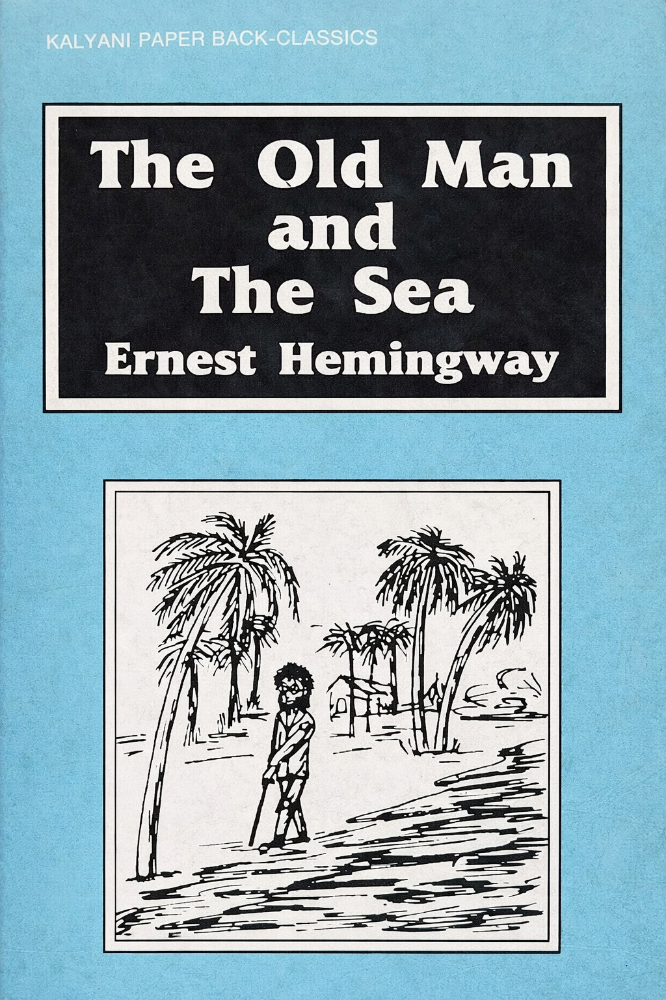

Author: ഏണസ്റ്റ് ഹെമിങ്വേ
Review by: രാജു ജോസഫ്
അമേരിക്കൻ സാഹിത്യത്തിൽ വിശിഷ്യാ നോവൽ സാഹിത്യത്തിൽ ഇന്നും ആരാധനയോടെ നോക്കിക്കാണുന്ന എഴുത്തുകാരനാണ് ഏണസ്റ്റ് ഹെമിംണിങവേ. സാഹിത്യകാരൻ എന്നതിനോടൊപ്പം പൗരുഷത്തിന്റെയും സാഹസികതയുടെയും ആൾരൂപമായിരുന്നു അദ്ദേഹം. ആഫ്രിക്കൻ വനാന്തരങ്ങളിലേക്ക് ഒറ്റക്ക് വിമാനം പറപ്പിച്ച് നായാട്ട് നടത്തിയും രണ്ടാം ലോക യുദ്ധകാലത്ത് അമേരിക്കൻ ഭൂഖണ്ഡത്തിനുചുറ്റും മുങ്ങിക്കപ്പൽ ഓടിച്ചും സ്പെയിനിൽ കാളപ്പോരിൽ പങ്കെടുത്തും വ്യത്യസ്തമായ ജീവിത അനുഭവങ്ങളിലൂടെ ജീവിതം സജീവമായി ജീവിക്കണം എന്ന് വിശ്വസിച്ച അദ്ദേഹം 1961ൽ 62-ാമത്തെ വയസ്സിൽ വീട്ടിലെ ഗോവണിപ്പടിയിൽ നിന്നും തെന്നി വീണതിനുശേഷം തന്റെ പഴയ ചലനശേഷി തിരിച്ചുകിട്ടില്ല എന്ന് ബോധ്യമായപ്പോൾ സ്വയം വെടിവെച്ച് ജീവിതം അവസാനിപ്പിച്ചു.
ചെറുകഥാകൃത്ത് എന്ന നിലയിലും നോവലിസ്റ്റ് ആയും അദ്ദേഹം അറിയപ്പെടുന്നു. അദ്ദേഹത്തിന്റെ പ്രധാനപ്പെട്ട നോവലുകൾ:
1. The Sun Also Rises
2. A Farewell to Arms
3. For Whom the Bell Tolls
4. To have And Have Not
5. The Old Man And The Sea
തുടങ്ങിയവയാണ്. നോവലുകളിൽ ഏറ്റവും പ്രകടമായ പ്രമേയം യുദ്ധവും സംഘർഷവും നിറഞ്ഞ തൻ്റെ തലമുറയുടെ തിക്തമായ ജീവിതാനുഭവങ്ങളാണ്. അദ്ദേഹത്തിൻ്റെ കൃതികളിൽ ഒരുപക്ഷേ ഏറ്റവും പ്രസിദ്ധമായത് 'കിഴവനും കടലും' എന്ന നോവലാണ്. സാൻ്റിയാഗോ എന്ന വൃദ്ധനായ ക്യൂബൻ മീൻപിടുത്തക്കാരൻ്റെ സ്വപ്നമായിരുന്നു ഇന്നേവരെ ആരും പിടിക്കാത്ത അത്ര വലിപ്പമുള്ള ഒരു ഭീമൻ മാർലിൻ മത്സ്യത്തെ പിടിക്കുക എന്നുള്ളത്. തുടർച്ചയായ ദിവസങ്ങളിൽ തന്റെ വെള്ളത്തിൽ ഉൾക്കടലിൽ ചൂണ്ട ഉപയോഗിച്ച് അദ്ദേഹം മീൻപിടിക്കാൻ പോകുന്നു. ആദ്യനാളുകളിൽ മനോളിൽ എന്ന ബാലനും അദ്ദേഹത്തോടൊപ്പം ഉണ്ടായിരുന്നു. ഏതാനും ദിവസങ്ങൾക്കു ശേഷം ഭാഗ്യമില്ലാത്ത സാൻ്റിയാഗോയുടെ കൂടെ പോകുന്നിൽ നിന്നും ബാലന്റെ മാതാപിതാക്കൾ അവനെ വിലക്കി. 84 ദിവസവും അദ്ദേഹത്തിന് കാര്യമായൊന്നും കിട്ടിയില്ല. 85-ാo ദിവസം ഒരു ഭീമൻ മാർലിൻ അദ്ദേഹത്തിൻറെ ചൂണ്ടിയിൽ കുടുങ്ങി. മത്സ്യവുമായുള്ള അദ്ദേഹത്തിൻ്റെ തുടർച്ചയായ പോരാട്ടവും രണ്ടു ദിവസത്തെ പരിശ്രമത്തിനൊടുവിൽ മത്സ്യത്തെ കീഴ്പ്പെടുന്നതും ആണ് കഥാതന്തു. മത്സ്യവുമായി തീരത്തേക്കുള്ള യാത്രയിൽ സ്രാവുകൾ ആദ്യം ഓരോന്നായും പിന്നീട് കൂട്ടമായും വന്നു താൻ പൊരുതിപ്പിടിച്ച മാർലിൻ മത്സ്യത്തിന്റെ മാംസം മുഴുവനും കടിച്ചുകൊണ്ടുപോകുന്നു. തുടക്കത്തിൽ സ്രാവുകളെ പിന്തിരിപ്പിക്കാൻ അദ്ദേഹത്തിനു കഴിയുന്നുണ്ടെങ്കിലും അവ കൂട്ടമായി വന്നപ്പോൾ ഒന്നും ചെയ്യാൻ കഴിയാതെ വരുന്നു. മത്സ്യത്തെ ചേർത്ത് കിട്ടിയ വള്ളവുമായി അദ്ദേഹം തീരത്തോടടുത്തപ്പോൾ ബാക്കി വന്നത് മത്സ്യത്തിന്റെ അസ്ഥിപഞ്ചരം മാത്രം. ഏതാനും നാൾ തന്നെ അനുഗമിച്ച ബാലനും മറ്റു മുക്കുവരും നോക്കി നിൽക്കെ അദ്ദേഹം 'പരാജയത്തിലും അഭിമാനിതനായി' നടന്നു പോകുന്നു.
1953ല് കഥകൾക്കുള്ള പുലിറ്റ്സർ പുരസ്കാരവും 1954 ഈ കൃതിയും കൂടി പരാമർശിക്കപ്പെട്ട് അദ്ദേഹത്തിന് നോബൽ സമ്മാനവും ലഭിച്ചു. ഒരു പാരബിൾ അഥവാ അന്യാപദേശ കഥ എന്ന നിലയിൽ പലതരത്തിലും വ്യാഖ്യാനിക്കപ്പെടുന്ന ഹൃസ്വമായ നോവലാണ് 'കീഴവനും കടലും'. പ്രകൃതിശക്തികളുമായുള്ള സംഘർഷം നിറഞ്ഞ ജീവിതത്തിൽ ലക്ഷ്യം കൈവരിക്കാൻ ഉള്ള തീവ്രശ്രമത്തിൽ പലപ്പോഴും പൂർണ്ണമായ വിജയം സാധ്യമല്ല എന്ന് ഈ കഥ ഓർമിപ്പിക്കുന്നു. 'A kind of victory is possible, but not a complete one'. ഒരു തരത്തിൽ പറഞ്ഞാൽ 'The Alchemist' എന്ന നോവലിൽ മുന്നോട്ടുവെക്കുന്ന ആശയത്തിന് വിരുദ്ധമായ ഒന്ന്.